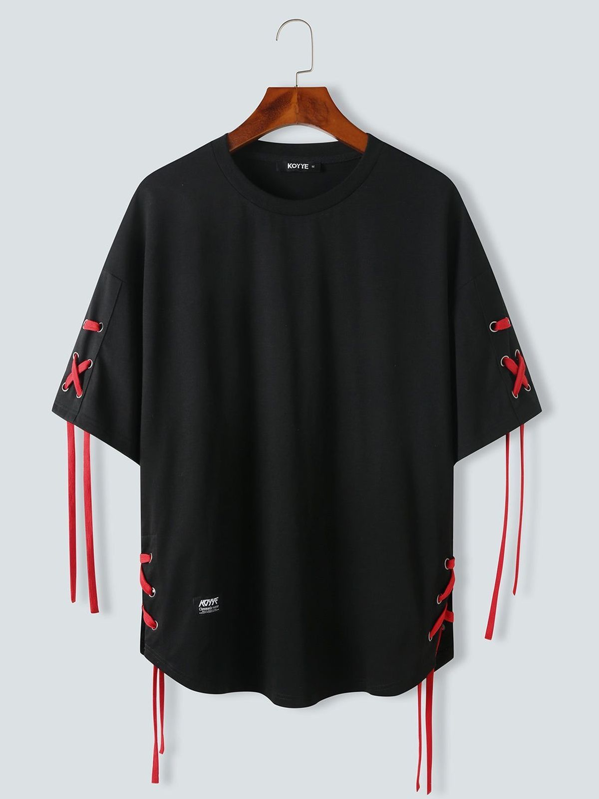

Crimson Protocol
$ 659,90
Minimalista à primeira vista, marcante em cada detalhe. A Crimson Protocol combina a elegância do preto absoluto com cadarços vermelhos estrategicamente posicionados nas mangas e na barra lateral, criando uma identidade urbana inspirada pela energia das ruas após o anoitecer. Desenvolvida para quem busca exclusividade, conforto e presença, esta peça une design contemporâneo e materiais premium em uma proposta sofisticada e versátil.
Especificações
- Tecido premium de alta gramatura
- Composição: 95% algodão premium e 5% elastano
- Toque macio e respirável
- Cadarços decorativos nas mangas e laterais inferiores
- Acabamento reforçado de alta durabilidade
- Coleção Night City 夜城